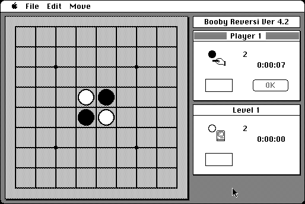

Download
brev68k.zip (152K) Booby Reversi 4.2 for Macintosh 68K repackaged into a zipped hfs disk image and checksum file. The disk image can be mounted with Mini vMac.
brev68k.sit (147K) Booby Reversi 4.2 for Macintosh 68K in the original format.
copyright: Toshihiko Okuhara
mod date: Apr 2, 2003
license: free for non-commercial use
official url :
Booby Reversi Download
Plays Reversi, otherwise known as Othello(TM). I found it unconventional (it gave me all four corners), but it beat me soundly anway. And that was on the easiest level.

If you find these downloads useful, please consider helping the Gryphel Project, which hosts them.
Here are the md5 checksums for the downloads, signed with Gryphel Key 5:
--------- GRY SIGNED TEXT --------- 7c8bb1571afab025b28d2fbf3be1ad88 brev68k.zip fcd8a403df3ef75380192188db069376 brev68k.sit ------- BEGIN GRY SIGNATURE ------- Gry/4Xa8CFcUzxdN/JvYi7jfKMcIQnoly+YurRA0NdEYeE5+/vy/ZLn1cs8Mxqhy 7OkNzzLN5XDcXjSq6cbcFvEhor+Cc7igJjhiLs/kIuGbDEmtQ0qtjZwYXqDm7NnA 4nVChQeryAThVuAAnVLaI32q5AV9eTSWFAHKLcRVd25fg24vwvk9t7oquTgMbqs8 -------- END GRY SIGNATURE --------